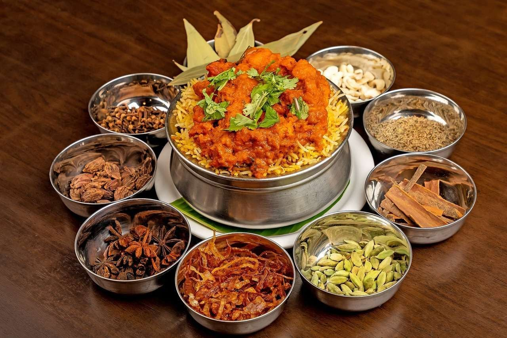

Lebih Dari Sekadar Masakan

Kuliner
Fondasi rasa otentik masakan Indonesia dan dunia.
Sumber: https://www.nestleprofessional.co.id/id/artikel/makanan-khas-nusantara
Kesehatan & Herbal
Rempah-rempah dan bumbu memiliki sejarah penggunaan tradisional, dengan peran penting dalam warisan budaya, dan dalam apresiasi terhadap makanan serta hubungannya dengan kesehatan.
Sumber: https://pubmed.ncbi.nlm.nih.gov/17022438/Sejarah
Dari keragaman jenis dan wilayah penghasil rempah-rempah, Indonesia memiliki peluang besar menjadi pemasok rempah dunia yang dapat memberikan kontribusi besar bagi perekonomian Indonesia.
Sumber: https://negerirempah.org/id/publikasi/berita-dan-liputan/129-rempah-indonesia-diburu-dunia.html